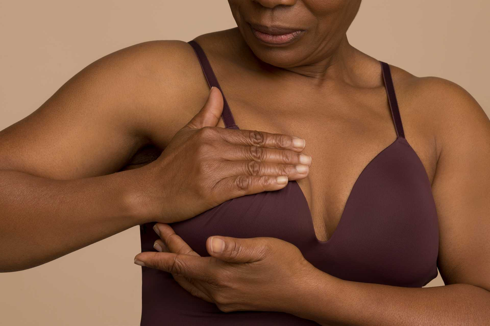

Sensibiliser et promouvoir des solutions innovantes
pour la santé
des femmes
Une fuite urinaire, un cancer du sein ou des difficultés à avoir
un bébé…les sujets relatifs à la santé des femmes restent souvent
des tabous persistants. Nombreuses sont celles qui n’osent pas en
parler à leur entourage de peur d’etre stigmatisée, isoler de la
société. Face à une offre de soin parfois défaillante et à
l’insuffisance de reconnaissance des pathologies féminines qui
demeure taboues.
Akinmed dit NON! , les problèmes
de santé feminine ne sont pas une fatalité. des solutions
existent: Des dispositifs médicaux sûrs, performants et
accessibles.
Avec nos partenaires professionnels de santé, nous travaillons
pour:
Engagé pour la santé des femmes.
Sensibilisation et promotion de solutions médicales innovantes en
santé intime, reproductive et mammaire.
Restez informé(e) de nos initiatives et événements.

Date : 24 Janv 2025
Heure : 14H- 15H (H d’Abidjan)